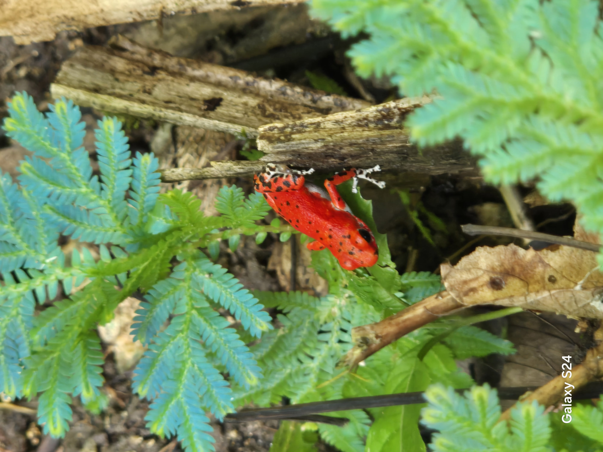
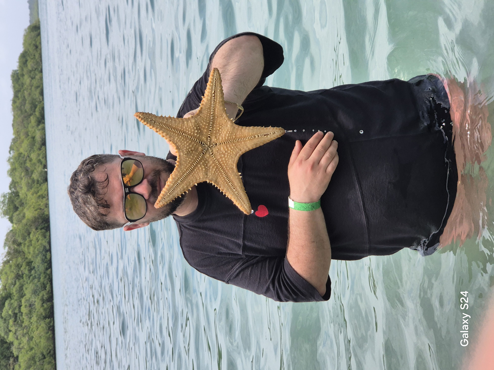
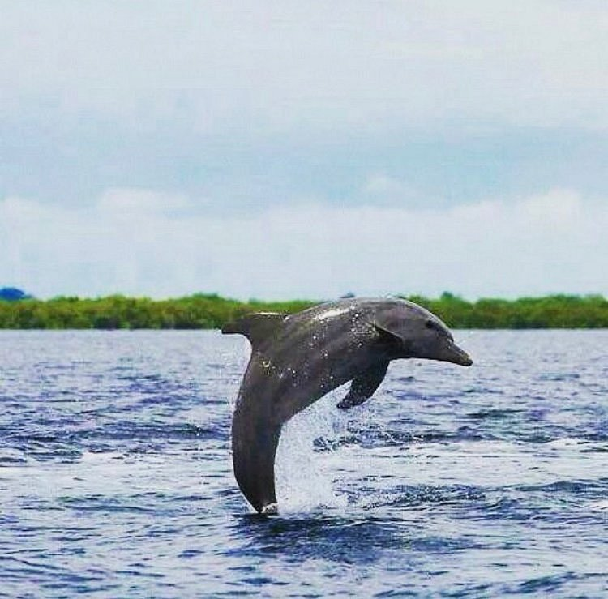

Red Frog Beach
אחד החופים היפים בארכיפלג, עם מים טורקיז, חול לבן ויער טרופי מלא בצפרדעים אדומות נדירות.

Starfish Beach
חוף רדוד ושקט שבו אפשר לראות כוכבי ים ענקיים במים צלולים — חוויה מושלמת למשפחות.

Dolphin Bay
מפרץ טבעי שבו דולפינים חיים באופן קבוע — סיורי שייט רגועים עם תצפיות מדהימות.

Islas Zapatilla
שני איים בתוליים עם חופים מושלמים ושוניות אלמוגים — גן עדן לצלילה ושנירקול.

Bluff Beach
חוף פראי וארוך עם גלים חזקים, צבעי זהב ותחושה של טבע עוצמתי.

Bocas Town
מרכז החיים של הארכיפלג — מסעדות, ברים, שווקים וצבעוניות קריבית שאין בשום מקום אחר.

Hospital Point
נקודת שנירקול מעולה עם מים צלולים, אלמוגים ודגים צבעוניים — קרוב מאוד לעיר.

פארק לאומי באסטימנטוס
שמורת טבע עצומה עם ג'ונגלים, חופים מבודדים, קופים, עצלנים ושוניות אלמוגים מרהיבות.

Sloth Island
אי קטן שבו אפשר לראות עצלנים בטבע — חוויה מרגשת וייחודית לאזור.